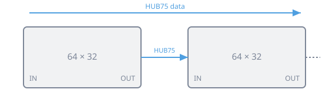
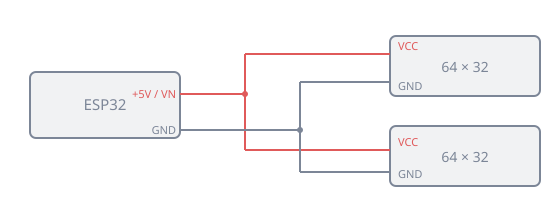

Hardware
MarqueeManager drives the secondary displays of a cabinet — everything that is not the game screen. This page presents the screen types you can hand to it, then details how to build a real DMD from LED panels.
Screen types
You connect these screens like extra monitors; MarqueeManager assigns each a surface (see My setup, which identifies and places them).
| Screen | Role | Common hardware |
|---|---|---|
| Marquee | The header sign at the top of the cabinet (animated art, logo, current game) | Wide LCD monitor — often an ultra-wide format (e.g. 19"×6", 1920×540) slotted where the original backlit marquee sat |
| Topper | A screen at the top of the cabinet, above the marquee | Small 16:9 LCD |
| DMD | The dot-matrix display (scores, pinball/arcade-style animations) | A real LED DMD (HUB75 panels + ZeDMD, below) or a small LCD that simulates it |
| Control / LCD screen | Instruction cards, secondary art, second player… | LCD in whatever format you like |
One monitor = one video output
Each screen is a full Windows display, wired to a graphics-card output (HDMI/DisplayPort) or a USB→HDMI adapter. The LED DMD is the exception: it is not a video device but connects over USB (see below).
Build a ZeDMD DMD (128 × 32)
A real DMD is made from two 64 × 32 HUB75 LED panels, placed side by side to form a 128 × 32, driven by an ESP32 microcontroller running the ZeDMD firmware. The whole thing connects over USB and needs no external 5 V power supply.
Two controllers are possible:
- classic ESP32 — best if you already have a working build;
- ESP32-S3 DevKitC-1 N16R8 — recommended for a new build.
What you need
- 2 HUB75 LED panels, 64 × 32;
- 1 classic ESP32 or 1 ESP32-S3 N16R8;
- 1 controller board (the carrier that receives the ESP32);
- 1 HUB75 ribbon cable between the two panels;
- jumper wires (Dupont) between the board and the left panel — wired signal by signal (see the HUB75 table); if your board has a HUB75 output connector, a HUB75 ribbon cable is enough;
- power leads (+5 V and ground) to both panels;
- 1 USB cable (data, not a charge-only one);
- a frame, screws, standoffs and cable ties;
- a multimeter recommended to check polarity.
| classic ESP32 | ESP32-S3 | |
|---|---|---|
| Firmware | ZeDMD 128x32 |
ZeDMD S3 128x32 |
| USB | Board port | left USB-C CDC |
| +5 V panels | 5V or VIN |
VN |
| Ground | GND |
GND |
1. Assemble the two panels
Place the panels side by side, the same way up, following the data-direction arrows printed on the back.

- Wire the
HUB75 OUTof the left panel to theHUB75 INof the right panel with the HUB75 ribbon. - Respect the arrows (data flows left to right).
- Leave the right panel's
OUTfree. - Never force a connector.
The final resolution is 128 × 32 pixels.
2. Install the controller
- Unplug USB.
- Align the ESP32 with its controller board.
- Check that no pin is offset.
- Push the controller in gradually.
- Keep the USB connector accessible.
On the ESP32-S3, use only the left USB-C CDC port for flashing, data and power.
3. Wire the HUB75 (signal by signal)
Connect the board to the HUB75 IN connector of the left panel. On the board, the data pins are labelled D* (D25, D4…): GPIO25 in the firmware is D25 on the board. On some S3 boards only the number is printed (4 = D4).
| HUB75 signal | classic ESP32 | ESP32-S3 |
|---|---|---|
| R1 | D25 | D4 |
| G1 | D26 | D5 |
| B1 | D27 | D6 |
| R2 | D14 | D7 |
| G2 | D12 | D15 |
| B2 | D13 | D16 |
| A | D23 | D18 |
| B | D19 | D8 |
| C | D5 | D3 |
| D | D17 | D42 |
| E | D22 | D1 |
| CLK | D16 | D41 |
| LAT / STB | D4 | D40 |
| OE | D15 | D2 |
| Logic ground | GND | GND |
D* labels are data pins
A D* pin must never carry power. Wire one signal at a time, check each link, finish with logic ground, and make sure no D* wire touches a VCC/5V pin.
4. Power the panels
Both panels are powered in parallel from the board: the 5 V it supplies is right for them — no over-voltage, no smearing.

- Unplug USB.
- Locate
5V/VIN(classic ESP32) orVN(S3), thenGND. - Wire +5 V to both panels'
VCCinputs. - Wire
GNDto both panels'GND. - Check polarity with the multimeter, then insulate and secure the connections.
Polarity
Swapping VCC and GND can damage the panels and the controller. Verify before plugging in USB.
5. Mount everything
On a back plate: the two panels aligned, the board on standoffs (never directly on metal), the ribbon cables without sharp bends, the wires held by cable ties, and the USB cable held by a strain relief.
Flash and configure with ZeDMD Updater 2
The firmware is installed and tuned with the Windows tool ZeDMD Updater 2. It detects COM ports, flashes the ESP32 or S3, and configures the RGB order, brightness and USB settings.
Plug in and identify the controller
Plug in the USB cable (board port for the classic ESP32; left USB-C CDC for the S3). The port should appear under Device Manager → Ports (COM & LPT), then in the list of ZeDMD Updater 2.
An unflashed controller may show as Stock ESP32 (classic) or Unknown (S3). The S3 is not always recognised automatically: find its COM port, and double-click no in the S3 column to switch it to yes.
Flash the right firmware
| Controller | Firmware |
|---|---|
| classic ESP32 | ZeDMD 128x32 |
| ESP32-S3 | ZeDMD S3 128x32 |
Pick an official release and the 128 × 32 resolution, then Download and flash (or Flash from a file with the right ZeDMD.bin).
Classic ESP32 stuck while flashing
If flashing stalls on the connection dots: hold BOOT and RST, release RST, then BOOT, and wait for flashing to start (sometimes twice). The S3 normally needs no button action.
Tune the DMD
Re-select the controller in the Updater, then:
- Resolution:
128 × 32. - RGB order: the test logo must show red top-left, green bottom-left, blue top-right. Change
RGB Orderuntil it's right. - Brightness: start low, raise it gradually.
- USB packet size: aim for
512(classic ESP32) or1024(S3) — start lower and raise it while the image stays stable. - Refresh: around
90 Hzfor a 128 × 32; lower it if unstable.
Finish with Set new parameters and wait for the write to complete before unplugging. Flashing alone does not apply these settings: configure them afterwards.
First test
Plug USB back in and wait for the ZeDMD logo: both panels must form one image, in the right colours, with no flicker or smear, and the controller must not reboot.
On the RetroBat side, the DMD display itself (128 × 32 rendering, rotation, pinball games…) is set in DMD and ZeDMD.
Hardware troubleshooting
| Symptom | Check |
|---|---|
| No display | USB cable (data), flashed firmware, VCC/GND, HUB75 IN, and the CLK, LAT, OE signals |
| Only one panel lights | The ribbon between left OUT and right IN, and the right panel's power |
| Wrong colours | The RGB Order in ZeDMD Updater 2 |
| Flicker / reboots | Lower the brightness, USB packet size or refresh; try another cable or USB port |
| ESP32 won't flash | The BOOT + RST sequence |
| S3: wrong firmware | Switch the S3 column to yes, then reflash ZeDMD S3 128x32 |
Sources
- ZeDMD (firmware): github.com/PPUC/ZeDMD
- ZeDMD Updater 2 (flashing/config tool): github.com/zesinger/ZeDMD_Updater2